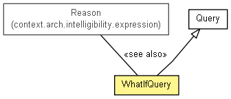

context.arch.intelligibility.query
Class WhatIfQuery
java.lang.Object
 context.arch.intelligibility.query.Query
context.arch.intelligibility.query.WhatIfQuery
context.arch.intelligibility.query.Query
context.arch.intelligibility.query.WhatIfQuery
- All Implemented Interfaces:
- java.io.Serializable
public class WhatIfQuery
- extends Query

Query to ask What If the in-widget input conditions (as Reason) were different, what the outcome would be.
Anything about the candidate ComponentDescription may be changed.
- See Also:
Reason,
Serialized Form
|
Field Summary |
static java.lang.String |
QUESTION_WHAT_IF
Question type to ask If the widget state was different, What would the outcome be |
| Fields inherited from class context.arch.intelligibility.query.Query |
context, question, QUESTION_CERTAINTY, QUESTION_DEFINITION, QUESTION_INPUTS, QUESTION_NONE, QUESTION_OUTPUTS, QUESTION_PRETTY_NAME, QUESTION_RATIONALE, QUESTION_UNIT, QUESTION_WHAT, QUESTION_WHAT_AT_TIME, QUESTION_WHEN, QUESTION_WHY, timestamp |
|
Constructor Summary |
WhatIfQuery(java.lang.String question,
java.lang.String context,
Reason inputs)
|
WhatIfQuery(java.lang.String question,
java.lang.String context,
Reason inputs,
long timestamp)
Create a WhatIfQuery with timestamp of what time the question is asking about set to current time. |
| Methods inherited from class java.lang.Object |
clone, equals, finalize, getClass, hashCode, notify, notifyAll, wait, wait, wait |
QUESTION_WHAT_IF
public static final java.lang.String QUESTION_WHAT_IF
- Question type to ask If the widget state was different, What would the outcome be
- See Also:
- Constant Field Values
WhatIfQuery
public WhatIfQuery(java.lang.String question,
java.lang.String context,
Reason inputs)
WhatIfQuery
public WhatIfQuery(java.lang.String question,
java.lang.String context,
Reason inputs,
long timestamp)
- Create a WhatIfQuery with timestamp of what time the question is asking about set to current time.
- Parameters:
question - context - widgetState - timestamp -
getInputs
public Reason getInputs()
toString
public java.lang.String toString()
- Overrides:
toString in class Query